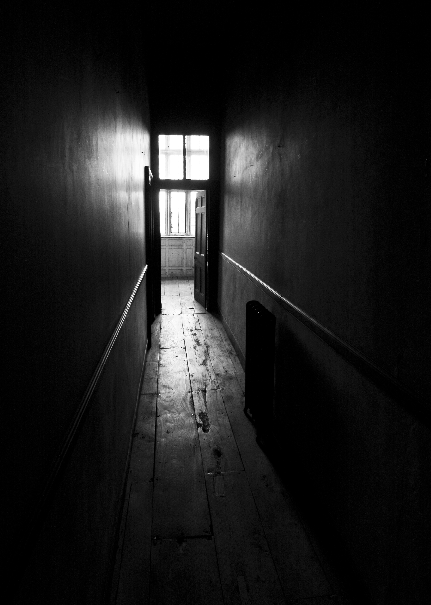

I wake up in a corridor that hums like an old television. The walls are damp and the ceiling drips a rhythm I don't recognise. The floor stretches away in both directions, but there is only one way forward.
In my fist is an orange bottle. My handwriting scratches across the label: remember in pieces. Inside are seven small white pills. Somehow I know what they do.
I am not here to remember everything. I am here to choose what matters.